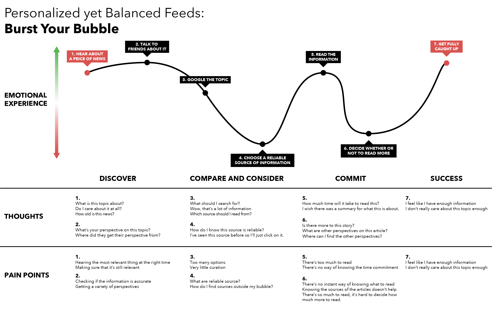
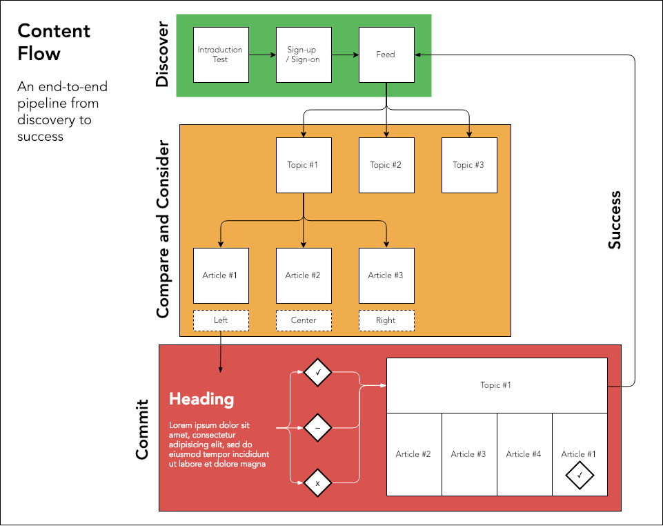
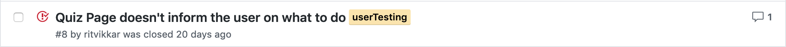
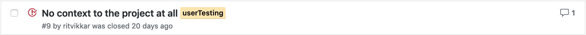

Burst Your Bubble
Design
The design process for this project was extremely iterative. We used a classic HCI design cycle model to inform our process and took the project from discovery phase to evaluation.
Discovery - User Interviews
 Participants: Ankit Sanghi '21, Asha Penprase '21, Isaac Hasley '19, Hashir Safdar '22
Participants: Ankit Sanghi '21, Asha Penprase '21, Isaac Hasley '19, Hashir Safdar '22
Goal: Understand the considerations and processes a person goes through to hear about a news topic, learn about it and form an opinion around it.
Hypothesis:
H1: Given a better representation of opinions in their search for news, users would find it easier to form an informed stance on political topics.
H2: Given the lack of an opinion source, users could be more open reading an argument that doesn’t align with their perspective.
User Interview Detailed Transcript
Outcomes: By interviewing our 4 candidates, we learnt more about their process of gathering information, specifically for news, and began to undestand the pain points they had in trying to broaden their perspectives. This understanding lead to the formation of the following User Journey Map:

Design - Content Flow
In order to mimic the user mental model and journey, we established a content flow chart that informed how information was going to be organized in our system and what the user paths would be.

Prototype - Wireframes
As visible in the journey map, the most difficult aspects of reading the news are steps 4 (choosing a reliable source of information) and 6 (deciding whether or not to read more). We decided to create a low-fedility prototype to further test a flow that makes these two steps easier.
Version 1 (Low-Fedility)
This prototype was presented to a few team members and other user testers for a design critique. Since this was a low-fedility prototype, the feedback was primarily on the content flow and general representation of Topics and Articles.
Full Feedback
Version 2 (High-Fedility T Prototype)
This version of our prototype ended up becoming the interface we eventually implemented. The feedback from the previous session informed the design choices made here.
Evaluate - User Testing
After fully implementing our web application, we did a couple of rounds of user testing. The first round was a more ad-hoc approach where we just emailed the interface to friends and family and saw their initial reactions to our work. The goal here was mostly bug bashing and getting high level usability feedback. Two major outcomes of this step:


The added quiz step in our content flow was being redundant and causing users to waste a lot of time on a topic they didn't really care about and our onboarding flow provided no context to a user who's new to the project.
After addressing some of the more critical bugs and feedback we got, we returned to our original user testers, Hashir, Asha, Ankit, and Isaac, to conduct a more detailed round of user testing, consisting of task based tests and more general exploratory tests.
Goal: Discover usability issues and measure the value of Burst Your Bubble
Hypothesis:
H1: Given a curated list of topics to discover on any given day, users can develop a more informed stance on political topics.
H2: Given the lack or obfuscation of a news source, users would be willing to read opinions that don’t necessarily align with their own.
Usability Testing Detailed Transcript
Outcomes: Via this detailed round of user testing, we found that the initial success criteria (H1 and H2) set for the interface was accomplished. There were still ways we could better the interface but in terms of usability and content, our interface met the expected standards. Additionally, each tester was give the chance to have a long form discussion on each of our hypothesis and they all came to the conclusion that given an interface like ours, their news reading habits would include more news from across the political spectrum.